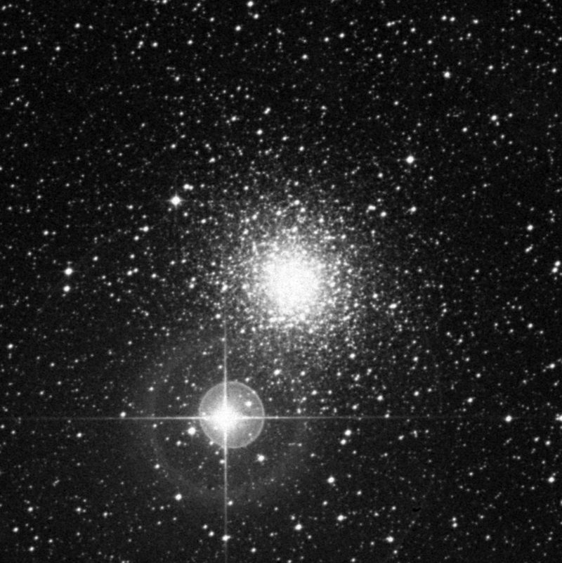
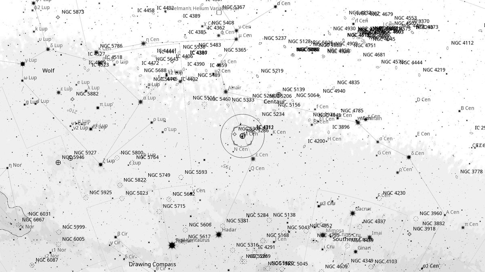
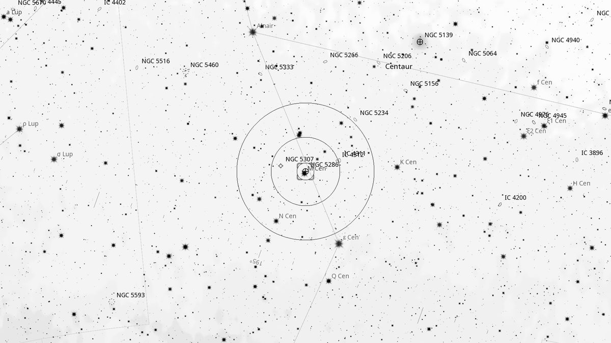
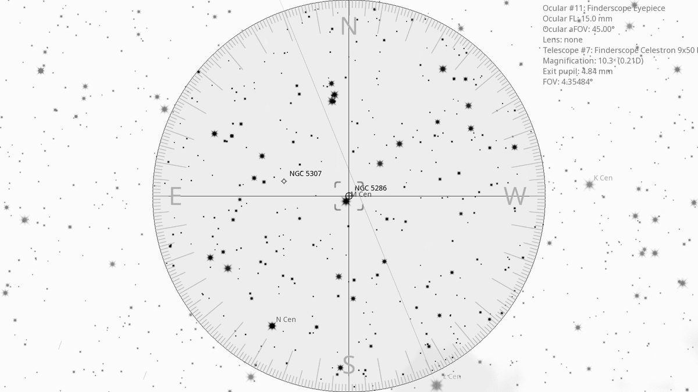
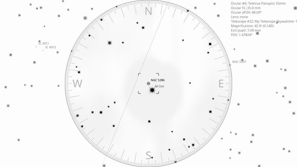

NGC 5286 (GC)
| R.A. | Dec. | Size | Mag | SB | Cnt.St | Type | Distance | Chart |
|---|---|---|---|---|---|---|---|---|
| 13h 46m 28.8s | -51° 22′ 34.1″ | 11.0′ | 8.3 | 13.3 | V | GC | -- | -- |

Background
NGC 5286 is a globular cluster 36,000 light-years away in Centaurus. Often overlooked because it sits within a few degrees of the spectacular ω Centauri. Discovered by James Dunlop in 1827.
My Observing Notes
30-cm (SkyWatcher 12-inch f/5): Easy to spot: find the line between α Cen and \varepsilon Cen (both naked eye); the globular sits 1/3 of the way along that line. Just visible in the finderscope. With the 35 mm Panoptic, not much more than a round haze of unresolved stars. The 16 mm Nagler begins to give it some texture, but the 9 mm Nagler (167×) gives the best view by far, with more of the halo stars resolved. The slightly irregular shape makes it more interesting than expected — worth a return visit through the larger Club scope.(10 April 2026)
25-cm (Meade 10-inch LX200, The Coffee Grinder): At the 10-inch the brighter core stars begin to resolve. A bright yellow-orange star dominates the field of view beneath the cluster, adding character to the view.(Thursday, April 2025)
References
Charts



